RAF Leuchars Mountain Rescue Team, January 1991 - September 1993
Novice. After a three week trial I was accepted into the team as a novice. Single novices were expected to attend three training weekends out of four and Monday night briefings.
RAF Mountain Rescue Winter Course, February 1992. Two weeks winter climbing and navigation in the Ben Nevis and Cairngorm areas.
RAF Mountain Rescue Summer Course, July 1992. Two weeks rock climbing and ropework training in North Wales.
Trained, September 1992. After many weekends on the hills I was promoted to become a trained team member. This allowed me to lead groups on the hills during training.
Party Leader. Shortly before leaving the team to study for university, I was offered the chance to do party leader assessment. This recognised my training, experience and progress and would have allowed me to lead a group during a rescue.

 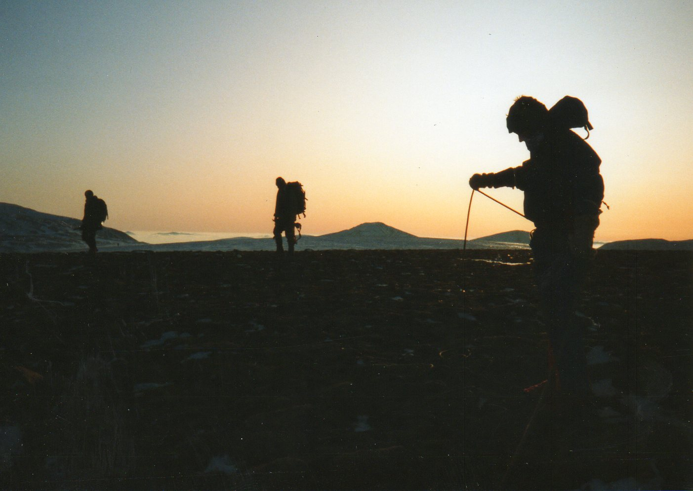
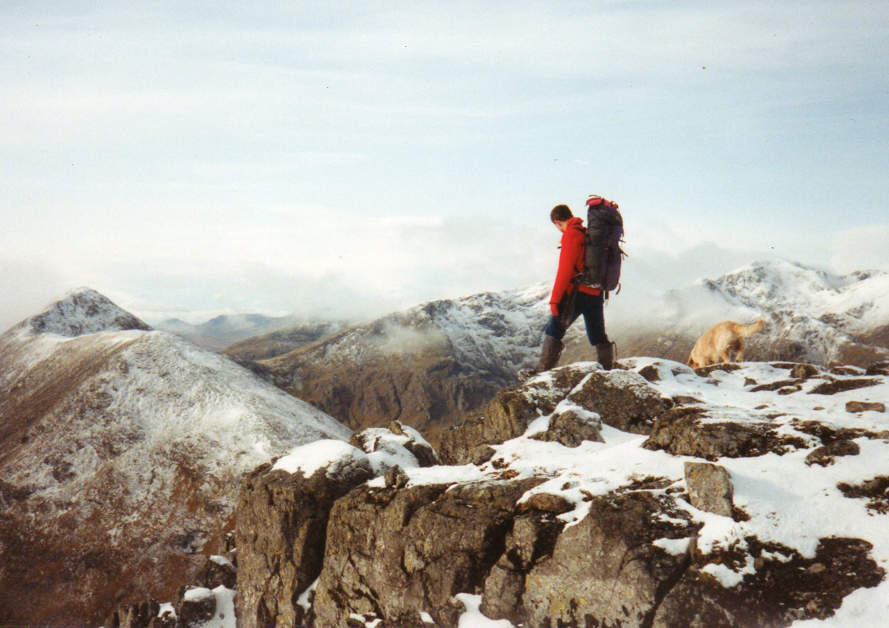
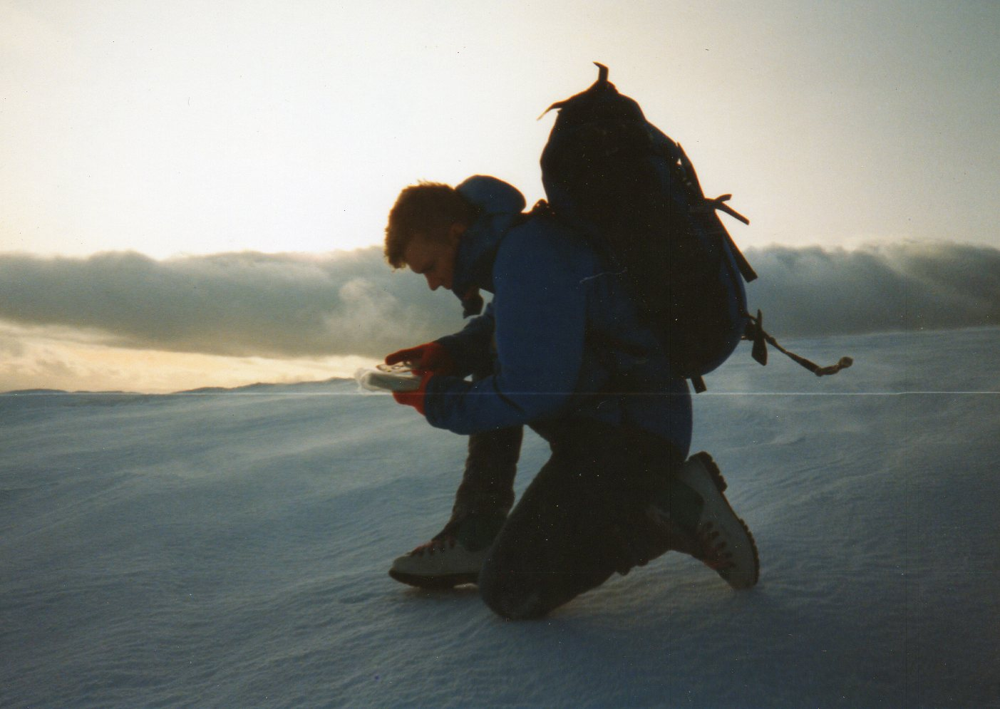
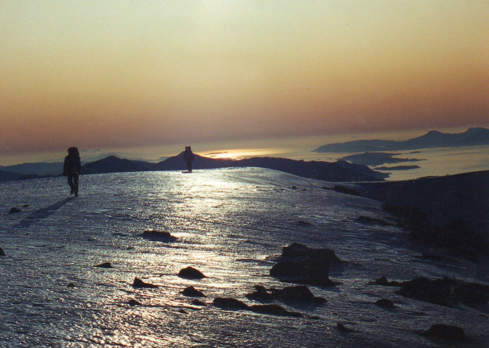
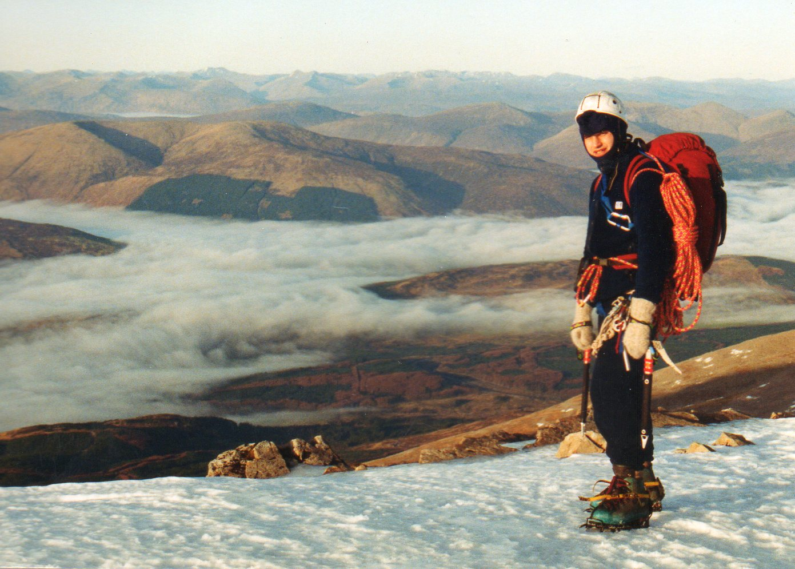
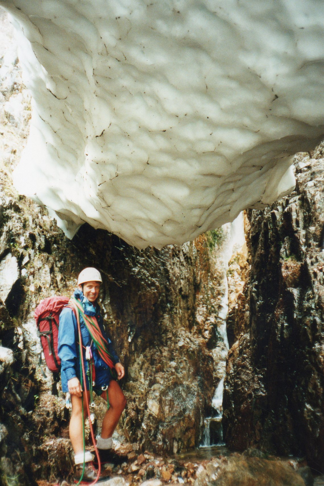
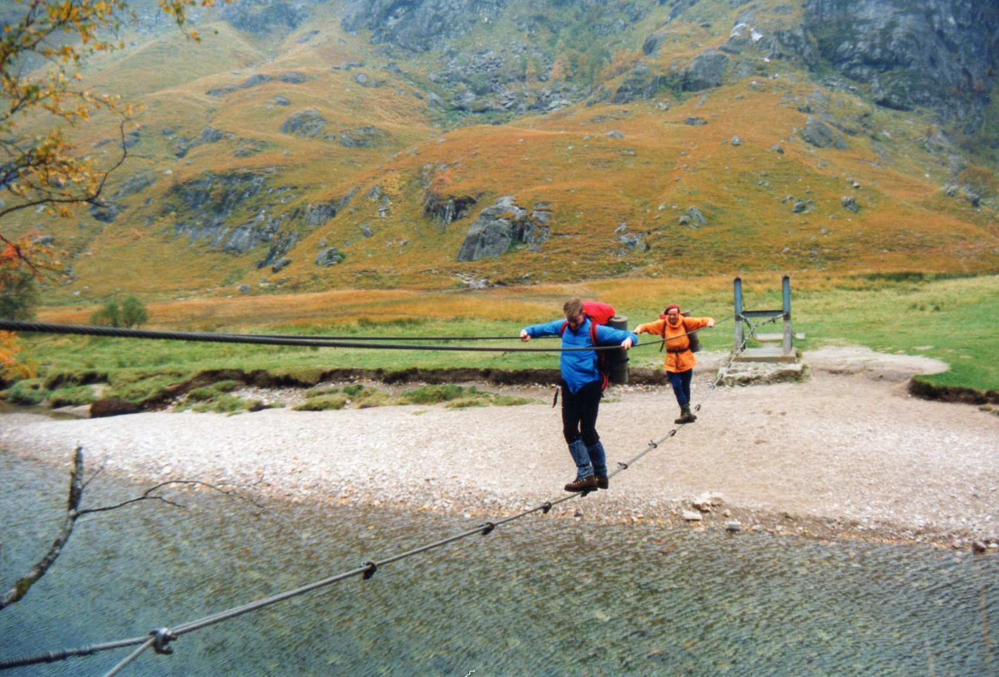
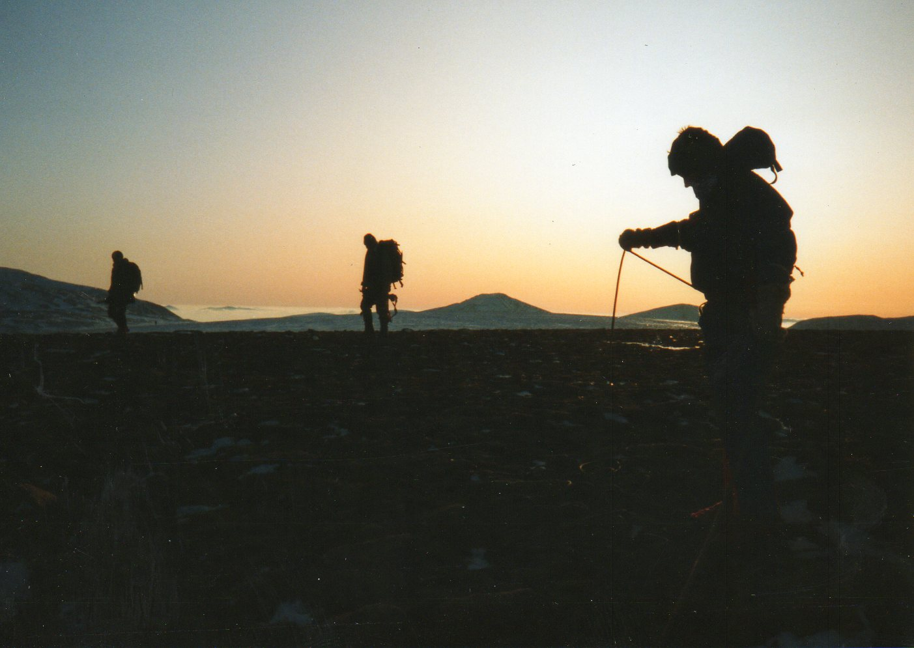
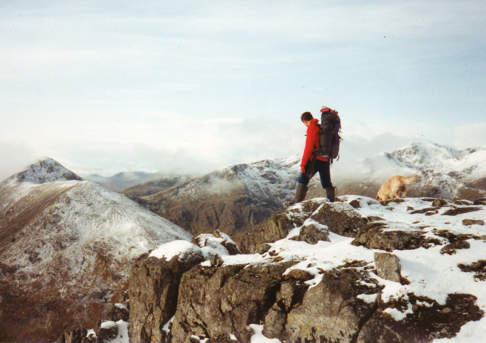
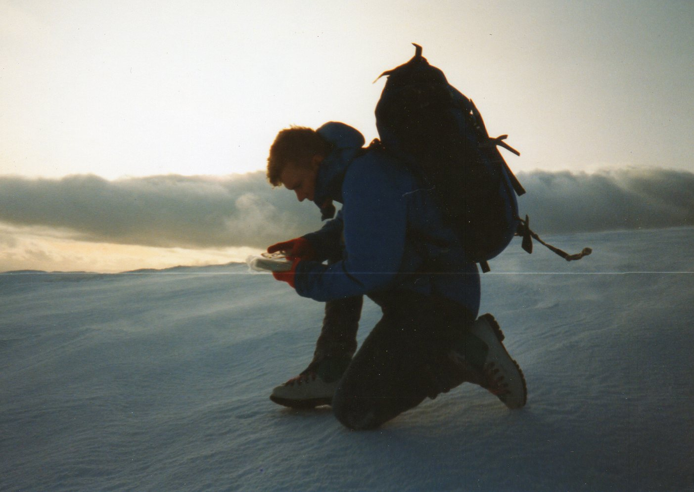
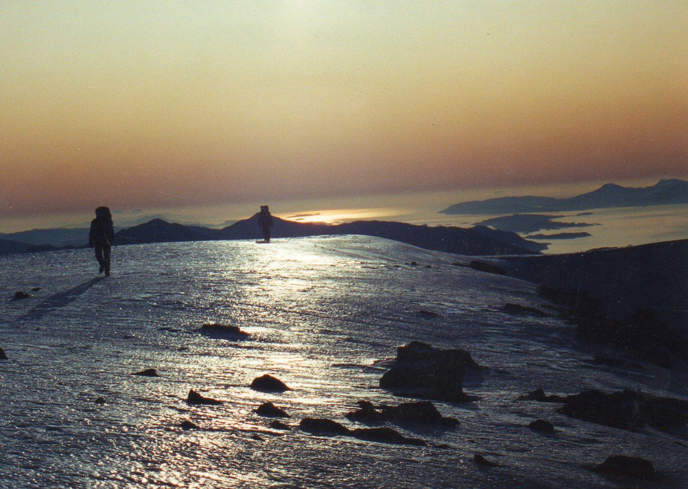
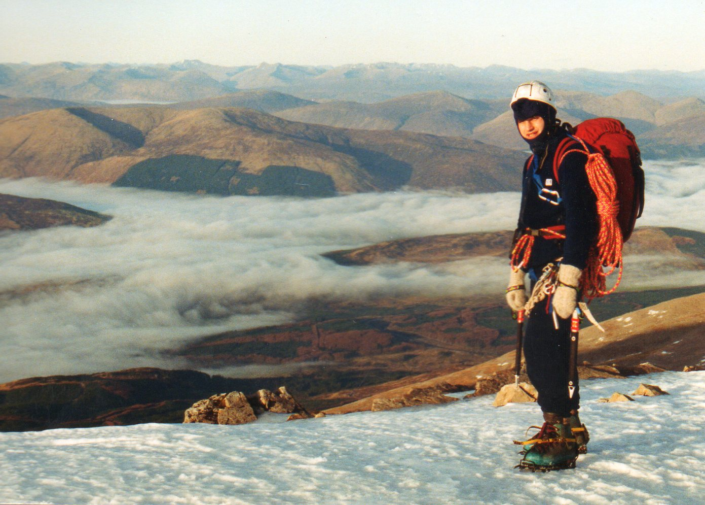
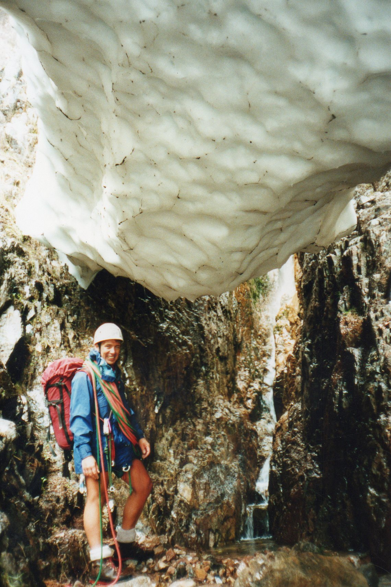
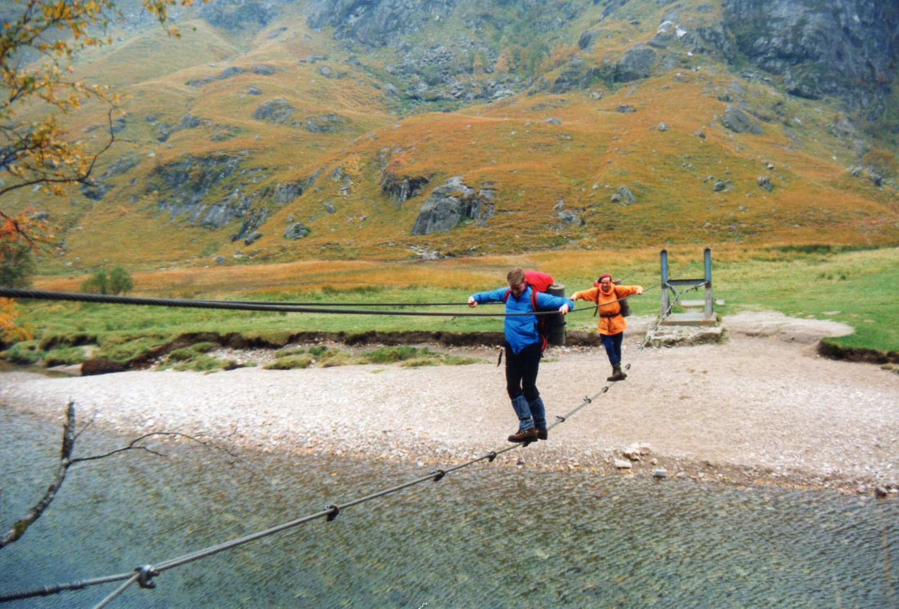